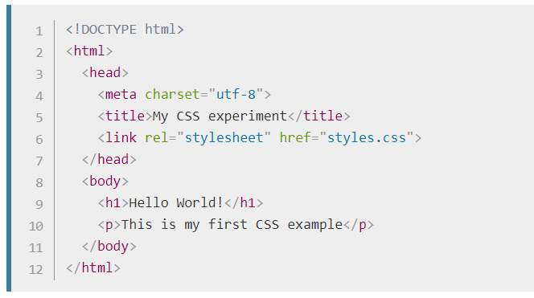
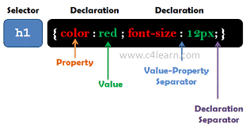
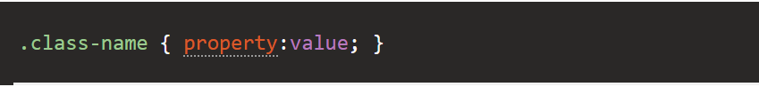
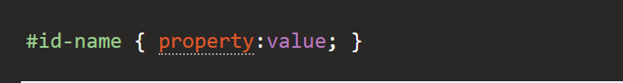
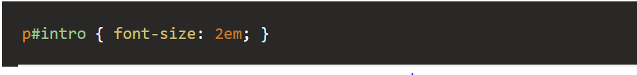

CSS er et programmeringssprogram og en forkortelse af Cascading Style Sheets. CSS er brugt til at style en html dokument som f.eks ændre font, farve, størrelse og afstand på indhold. Når vi skriver CSS,vi beskriver reglerne for vores html document og lader browsere håndtere gengivelsen. Css kan bruges på 3 forskelige måder: inline, embeded og separat stylesheet. Den der er mest praktisk er separat stylesheet fordi, det bliver mere overskugelig både html og css file. Når vi starter style på en webside vi skal første linke en separat stylesheet i html side. En separat stylesheet er når man har CSS file med en .css extention , savet i samme mappe hvor du har også index.html.
css – syntaks består af 3 regler: en vælger, en egenskab og en værdi.
CSS class - giver ekstra fleksibilitet til at specificere, hvilke elementer der skal style. For at gøre dette forbinder du elementet til stylen ved at erklære en stil for class og derefter tildele class til elementet. Du erklærer en CSS-class ved hjælp af en prik (.) Efterfulgt af classes navn. Du selv giver class navn. Efter class navn indtaster du blot de egenskaber / værdier, du vil tildele din class.
Du skal bruge class, når din style skal anvendes flere gange på det samme side.
Du kan tildele et unikt id til et HTML-element og derefter style dette element ved at henvise til dets unikke id. Dette giver dig mulighed for at definere en style, der kun kan bruges af det element, du tildeler ID til.
Hvis du vil bruge det samme id-navn til flere elementer, men hver med en anden style, du skal først skrive HTML-elementnavnet og begafter #
